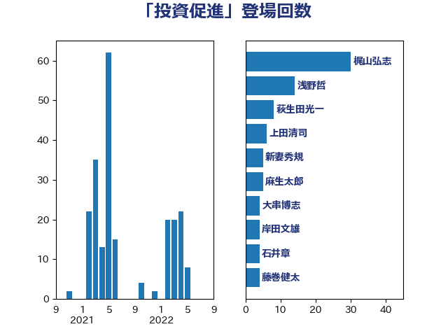

単語「投資促進」

| 梶山弘志 | 自由民主党 | 30 回 |
| 浅野哲 | 国民民主党 | 14 回 |
| 萩生田光一 | 自由民主党 | 8 回 |
| 上田清司 | 国民民主党 | 6 回 |
| 新妻秀規 | 公明党 | 5 回 |
| 麻生太郎 | 自由民主党 | 5 回 |
| 大串博志 | 立憲民主党 | 4 回 |
| 岸田文雄 | 自由民主党 | 4 回 |
| 石井章 | 日本維新の会 | 4 回 |
| 藤巻健太 | 日本維新の会 | 4 回 |
| 前原誠司 | 国民民主党 | 3 回 |
| 武田良太 | 自由民主党 | 3 回 |
| 鈴木俊一 | 自由民主党 | 3 回 |
| 中西健治 | 自由民主党 | 2 回 |
| 佐藤啓 | 自由民主党 | 2 回 |
| 吉川ゆうみ | 自由民主党 | 2 回 |
| 塩川鉄也 | 日本共産党 | 2 回 |
| 宗清皇一 | 自由民主党 | 2 回 |
| 後藤祐一 | 立憲民主党 | 2 回 |
| 江島潔 | 自由民主党 | 2 回 |
| 石井啓一 | 公明党 | 2 回 |
| 石井正弘 | 自由民主党 | 2 回 |
| 礒崎哲史 | 国民民主党 | 2 回 |
| 進藤金日子 | 自由民主党 | 2 回 |
| 中川康洋 | 公明党 | 1 回 |
| 坂本哲志 | 自由民主党 | 1 回 |
| 奥下剛光 | 日本維新の会 | 1 回 |
| 安達澄 | 無所属 | 1 回 |
| 山下貴司 | 自由民主党 | 1 回 |
| 山口晋 | 自由民主党 | 1 回 |
| 山岡達丸 | 立憲民主党 | 1 回 |
| 山谷えり子 | 自由民主党 | 1 回 |
| 岩渕友 | 日本共産党 | 1 回 |
| 岩田和親 | 自由民主党 | 1 回 |
| 工藤彰三 | 自由民主党 | 1 回 |
| 星野剛士 | 自由民主党 | 1 回 |
| 柴田巧 | 日本維新の会 | 1 回 |
| 森本真治 | 立憲民主党 | 1 回 |
| 源馬謙太郎 | 立憲民主党 | 1 回 |
| 熊谷裕人 | 立憲民主党 | 1 回 |
| 牧山ひろえ | 立憲民主党 | 1 回 |
| 田村まみ | 国民民主党 | 1 回 |
| 美延映夫 | 日本維新の会 | 1 回 |
| 菅義偉 | 自由民主党 | 1 回 |
| 西村康稔 | 自由民主党 | 1 回 |
| 角田秀穂 | 公明党 | 1 回 |
| 遠藤良太 | 日本維新の会 | 1 回 |
| 野上浩太郎 | 自由民主党 | 1 回 |
| 長坂康正 | 自由民主党 | 1 回 |
| 青木愛 | 立憲民主党 | 1 回 |
| 音喜多駿 | 日本維新の会 | 1 回 |
| 高木啓 | 自由民主党 | 1 回 |